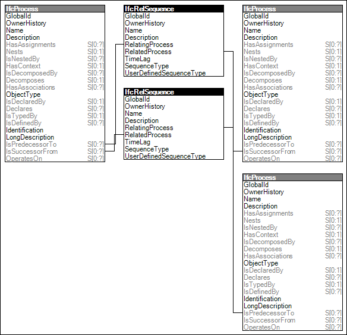

Processes that occur in time use this relationship to indicate the order of occurrence, such as for tasks, procedures, and events.
Figure 57 illustrates an instance diagram.

Figure 57 — Sequential Connectivity
Link to this page
 Link to this page
Link to this page